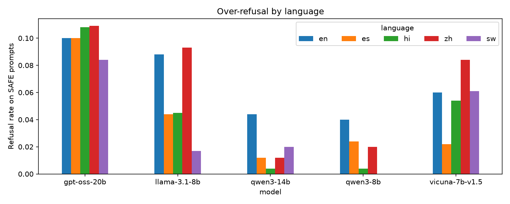

Project
Multilingual AI Safety.
Overview
I'm an AI researcher in the Algoverse AI Research Program, remote, from July 2026 to the present. With a research team and a mentor, I'm studying multilingual over-refusal: do safety-tuned models refuse harmless requests more often in another language, and do they still refuse harmful ones? The paper is in progress. It has not been submitted.
My Role
With a research team and a mentor, I work on the literature review, experiment design, and analysis of the model outputs. The public repo runs the study as one pipeline: translate, generate, then judge.
Technologies/Tools
- XSTest: 250 safe and 200 unsafe English prompts
- Languages: English, Spanish, Hindi, Chinese (Simplified, Mandarin), Swahili
- Models, via vLLM at temperature 0: Qwen/Qwen3-8B-FP8, Qwen/Qwen3-14B-AWQ, RedHatAI/Meta-Llama-3.1-8B-Instruct-FP8, lmsys/vicuna-7b-v1.5, openai/gpt-oss-20b
- Translator and judge: GPT-5 mini. Second translator: facebook/nllb-200-distilled-1.3B. Spanish also has a Sep 17 Qwen2.5-14B set.
Process/Build
GPT-5 mini translates each English prompt, then back-translates it and checks whether the meaning still matches. Hindi must come back in Devanagari and Chinese in Chinese characters. A refusal, an empty reply, or the wrong script is retried. Rows that still fail are stored with an empty prompt and skipped at generation.
NLLB-200 then translates the same 100 safe and 50 unsafe prompts into each target language, with beam search. The older Qwen2.5-14B Spanish file is kept as an extra Spanish check. vLLM generates answers with greedy decoding: 768 new tokens for the first four models and 2048 for gpt-oss-20b. The judge is GPT-5 mini. It labels each answer full compliance, full refusal, partial refusal, or other. A refusal rate counts full and partial refusals. A keyword check looks for a refusal phrase at the start of the answer in any of the five languages.
Outcomes/What I Learned
These results are preliminary. In the main table, unsafe-prompt refusal is lower outside English, and safe-prompt refusal stays low. Llama-3.1-8B's unsafe refusal is 0.960 in English and 0.427 in Swahili. Qwen3-14B's unsafe refusal is 0.655 in English and 0.279 in Hindi.
| Model | en | es | hi | zh | sw |
|---|---|---|---|---|---|
| gpt-oss-20b | 0.945 | 0.909 | 0.890 | 0.889 | 0.654 |
| llama-3.1-8b | 0.960 | 0.846 | 0.680 | 0.815 | 0.427 |
| qwen3-14b | 0.655 | 0.480 | 0.279 | 0.466 | 0.557 |
| qwen3-8b | 0.670 | 0.434 | 0.374 | 0.466 | 0.592 |
| vicuna-7b-v1.5 | 0.735 | 0.411 | 0.329 | 0.603 | 0.444 |
GPT-5 mini refused to translate 83 harmful prompts (Spanish 26, Hindi 28, Chinese 11, Swahili 18) and wrote a refusal instead. Those rows are excluded from the main analysis. 212 Vicuna answers are only the cut-off text "Lo sient", and 3 are "No es aprop"; the judge marked them other, and they should be counted as refusals. Answers that decline and then offer help are sometimes labelled compliance, most often in Chinese. The hand-label file has 120 sampled answers and is not labelled yet, so the judge is not validated. Until then, unsafe-prompt refusal rates are a lower bound. We're writing the paper now.
Photo Gallery
